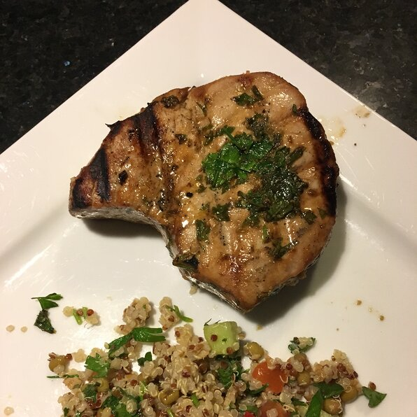

Marinated Tuna Steak

Description
This mixture of orange juice, soy sauce, and garlic gives this marinade a
wonderful taste.
Ingredients
- ¼ cup orange juice
- ¼ cup soy sauce
- 2 tablespoons olive oil
- 1 tablespoon lemon juice
- 2 tablespoons chopped fresh parsley
- 1 clove garlic, minced
- ½ teaspoon chopped fresh oregano
- ½ teaspoon ground black pepper
- 4 (4 ounce) tuna steaks
Steps
-
In a large non-reactive dish, mix together the orange juice, soy sauce,
olive oil, lemon juice, parsley, garlic, oregano, and pepper. Place the
tuna steaks in the marinade and turn to coat. Cover, and refrigerate for
at least 30 minutes.
- Preheat grill for high heat.
-
Lightly oil grill grate. Cook the tuna steaks for 5 to 6 minutes, then
turn and baste with the marinade. Cook for an additional 5 minutes, or
to desired doneness. Discard any remaining marinade.
Original recipe found at
allrecipes.com
← Go back